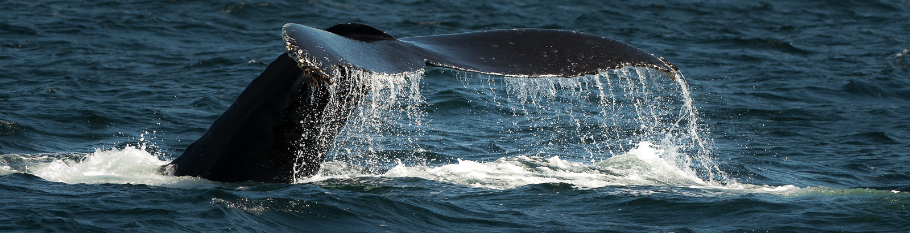

Nazwa „wieloryb” jest pozostałością z czasów, gdy walenie uważano za gigantyczne ryby.
Pomimo zewnętrznego podobieństwa do olbrzymich ryb (patrz rekin wielorybi) są ssakami i posiadają wszystkie najważniejsze ich cechy.
Olbrzymi biały wieloryb, faktycznie kaszalot, jest tytułowym bohaterem powieści Hermana Melville’a Moby Dick
Co roku, w drugą lub trzecią sobotę lutego, na wyspie Maui odbywają się obchody Światowego Dnia Wieloryba (ang. World Whale Day), których organizatorem jest Pacific Whale Foundation. Tradycja ta sięga 1980 roku.
Wielorybnictwo – polowanie na wieloryby i inne duże walenie w celu pozyskania dostarczanych przez nie surowców: spermacetu, fiszbinu, ambry i innych.
Wielorybnictwo intensywnie rozwijało się do początków XX wieku; w miarę jak liczba waleni spadała, a surowce przez nie dostarczane zaczęto zastępować innymi (gaz, elektryczność, plastik itp.) zaczęło gwałtownie tracić na znaczeniu.
